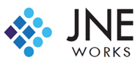

VLM 통합 공장 작업자 포즈 분석 시스템
실시간 작업자 안전 모니터링 + AI 분석 보고서 + 시각적 데이터 분석
웹캠 분석
동영상 분석
VLM 분석
중지
실시간 분석 상태
카메라를 시작하여 분석을 시작하세요.
자세 측정값
척추 각도
-°
목 기울기
-°
어깨 균형
-°
무릎 각도
-°
작업 강도
보통
AI 전문가 분석
AI가 작업자의 자세를 분석 중입니다...
분석된 스냅샷
개선 권장사항
이벤트 타임라인
실시간 자세 분석 차트
00:00
분석 시간
0%
양호 자세율
0°
평균 척추각도
0
경고 횟수
척추 각도 추이
목 기울기 추이
어깨 균형도
자세 품질 분포